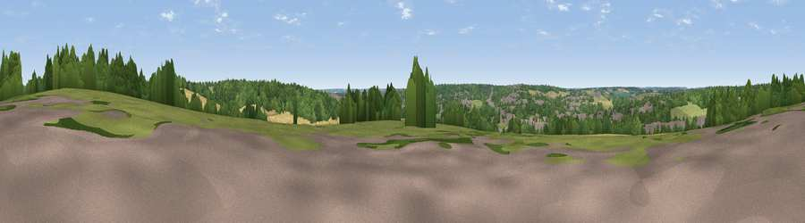

Viewpoint near Welwyn
#43820 in England · top 63% of its area beats it · near Welwyn · path 227 mWhere it is
The exact computed spot (TL 24125 16375). Click the marker for map links.
Public access: the nearest public right of way is about 227 m away — the final stretch may cross private land. Computed from Natural England's CRoW access layer and OpenStreetMap rights of way — not the legal definitive map. Always verify locally.
The view, rendered

A 360° render of this exact spot computed from the terrain model, tree cover and land cover — summer colours, afternoon light, calibrated against photographs of famous viewpoints. Real trees, hedges and buildings will differ in detail.
The panorama
Grey silhouette: terrain skyline in each direction (720 bearings, Earth curvature and refraction included). Dashed green: skyline with trees (+15 m) and buildings (+8 m) as obstacles. Blue strip: how far the ground is visible on each bearing.
Where the view opens
Wedge length = distance to the farthest visible ground on that bearing (vegetation-aware). Rings at 10, 25 and 50 km.
What fills the view
48% woodland · 26% grassland · 15% cropland · 11% built-up
Angular shares of the visible panorama (visual magnitude), not map area. Landscape diversity 0.53 (0–1 Shannon).
Key numbers
More beautiful places nearby
The staircase of upgrades: each row has a higher view potential than everything closer. Driving times are estimates from straight-line distance, calibrated against real road routing — check an actual route before setting out.
| Place | Direction | Drive | Score |
|---|---|---|---|
| Burnham Green | E · 2 km | ~6 min | 20.6 |
| Viewpoint near Stanborough | S · 5 km | ~11 min | 25.5 |
| Viewpoint near Thundridge | E · 11 km | ~20 min | 27.7 |
| Viewpoint near Gosmore | NNW · 12 km | ~23 min | 32.1 |
| Viewpoint near Baldock | N · 16 km | ~29 min | 53.7 |
| Viewpoint near Great Offley | NW · 17 km | ~29 min | 54.4 |
| Viewpoint near Hexton | NW · 18 km | ~31 min | 65.4 |
| Viewpoint near Ivinghoe | W · 28 km | ~44 min | 66.7 |
51.83221, -0.20004 · source: screening · position refined by local search. Computed location — check access rights before visiting.